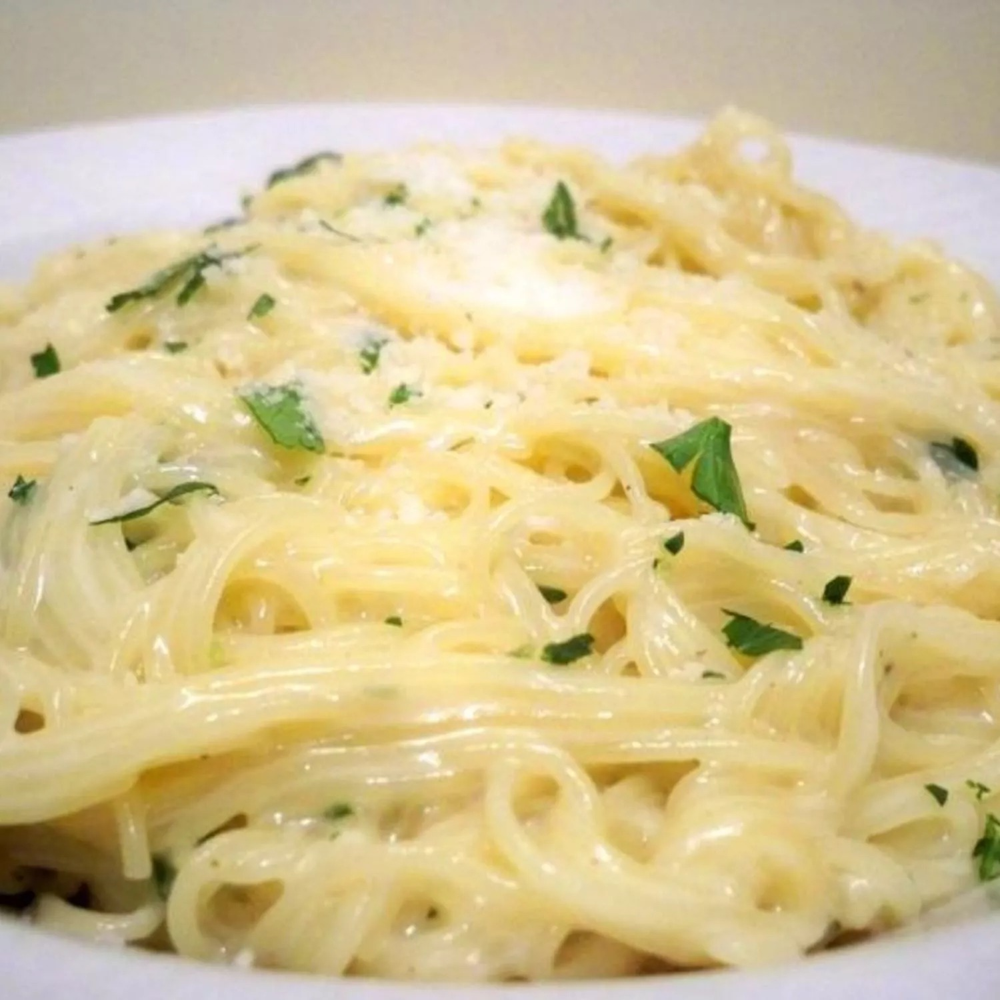

Tortilla Pizza Recipe

Description
This tortilla pizza is extremely easy to make. It is light enough to be a snack, serves well as an appetizer, or is so good that it can be devoured alone! You can use any sort of topping variation. The one below is the classic way I usually prepare it but feel free to experiment.
Ingredients
- 2 teaspoons olive oil
- 4 garlic cloves, minced
- 2 tablespoons butter
- 3 cups chicken broth, or more as needed
- ½ teaspoon ground black pepper
- ¼ teaspoon salt
- ½ pound spaghetti
- 1 cup grated Parmesan cheese
- ¾ cup heavy cream
- 1 ½ tablespoons dried parsley
Steps
- Heat olive oil in a medium pan over medium heat.
- Add garlic and stir until fragrant, 1 to 2 minutes.
- Brush with olive oil; sprinkle garlic powder, salt, and pepper on top.
- Pour in 3 cups chicken broth; add pepper and salt. Bring to a boil.
- Add spaghetti and cook, stirring occasionally, until tender yet firm to the bite, about 12 minutes.
- Add more chicken broth if pasta starts to stick to the pan.
- Add Parmesan cheese, cream, and parsley and mix until thoroughly combined. Serve immediately.
- Sprinkle oregano over cheese.
- Slice pizza into wedges using a pizza cutter.
Back